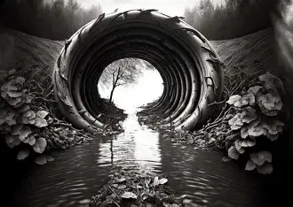
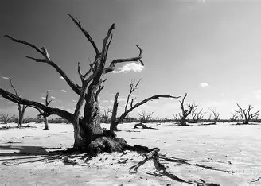

Problem we can't ignore and solutions we can't delay.
Forests are burning, oceans are rising, and species are disappearing. Our planet is on the edge — and so is our future. The time to act is now.
The world faces serious environmental issues in 2025. Rising temperatures, polluted water, and shrinking forests put people, wildlife, and the planet at risk. These challenges are not only future concerns—they are happening now and affect our daily lives. Climate change is one of the biggest threats.
Global Environmental Issues
Today, numerous threats exist to the environment and all Earth life, including humans. Industrialisation, deforestation, pollution and other human activities lead to these problems. Many solutions exist, but countries must collaborate to address these issues.


Topics to be covered here are as follows:-
Climate Change🧪
Pollution☁️
Deforestation🪴
Biodiversity Loss🐘
✅Common Solutions To Reduce Environmental Issues✅
Climate Change🧪
Climate change is a long-term change in the average weather patterns that have come to define Earth’s local, regional and global climates.
These changes have a broad range of observed effects that are synonymous with the term.
Scientists use observations from the ground, air, and space, along with computer models, to monitor and study past, present, and
future climate change. Climate data records provide evidence of climate change key indicators, such as global land and ocean temperature increases;
rising sea levels; ice loss at Earth’s poles and in mountain glaciers; frequency and severity changes in extreme weather such as hurricanes, heatwaves,
wildfires, droughts, floods, and precipitation; and cloud and vegetation cover changes.
Pollution is the contamination of our environment by harmful substances, making air, water, and soil unsafe for life.
It stems mainly from human activities like industrial emissions, vehicle exhaust, plastic waste, and chemical use.
Air pollution leads to respiratory diseases and climate change. Water pollution threatens marine life and drinking sources,
while soil pollution damages crops and food safety.
Even noise and light pollution disrupt ecosystems and harm health.
Plastic pollution, especially in oceans, is choking wildlife and entering the food chain.
These issues are no longer distant—they impact our health, planet, and future.
Deforestation is the large-scale removal of forests, often to make way for agricultural activities,
urban development, or industrial expansion. Forests play a vital role in maintaining ecological balance by supporting
biodiversity, regulating the climate, and purifying the air. However, the increasing demand for land and resources
has led to rapid forest clearance across the globe. This practice is especially common in tropical regions, where
rainforests are cut down to grow cash crops or raise livestock. The loss of trees disrupts natural habitats, pushing
countless species toward extinction. It also reduces the Earth’s ability to absorb carbon dioxide, contributing to global
warming. Soil erosion becomes more severe as tree roots no longer hold the soil in place, leading to poor land quality and
reduced agricultural productivity. Additionally, the disappearance of forests affects water cycles, causing irregular
rainfall and increasing the risk of floods or droughts. Indigenous communities that depend on forests for their livelihood
and culture also face displacement. Deforestation is not just an environmental concern; it has social and economic
consequences as well. Despite growing awareness, forest loss continues at an alarming rate. Each tree cut down brings us
a step closer to losing irreplaceable natural treasures and the balance they sustain.
Biodiversity loss refers to the decline or disappearance of various species of plants, animals, and microorganisms
from the Earth. It is a major environmental concern that affects the balance of natural ecosystems. Every species plays
a unique role in maintaining the health and stability of the environment. When even one species is lost, it can disrupt food chains,
reduce ecosystem productivity, and affect other life forms. Human activities such as deforestation, pollution, climate change,
and overexploitation of resources are the main drivers of biodiversity loss. Natural habitats are being destroyed at an alarming rate,
leaving many species without shelter or food. The decline in biodiversity also threatens human health, food security, and clean water.
Ecosystems with rich biodiversity are more resilient and better able to adapt to changes. Losing this variety of life weakens nature’s ability
to recover from disturbances. As biodiversity continues to decline, the natural systems that support life on Earth are placed at greater risk.